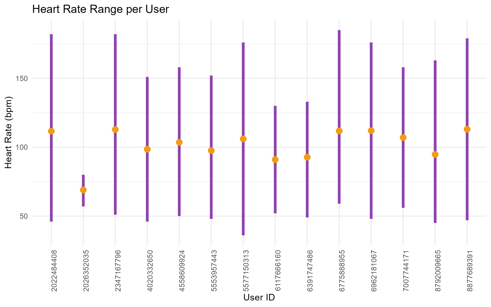

Health & Fitness Data Visualizations
Explore key metrics from personal health tracking: heart rate zones, calorie burn, sleep distribution, and activity levels.

Heart Rate Zones Throughout the Day
Hourly Calorie Expenditure
Sleep Pattern Distribution

Steps vs Sedentary Behavior